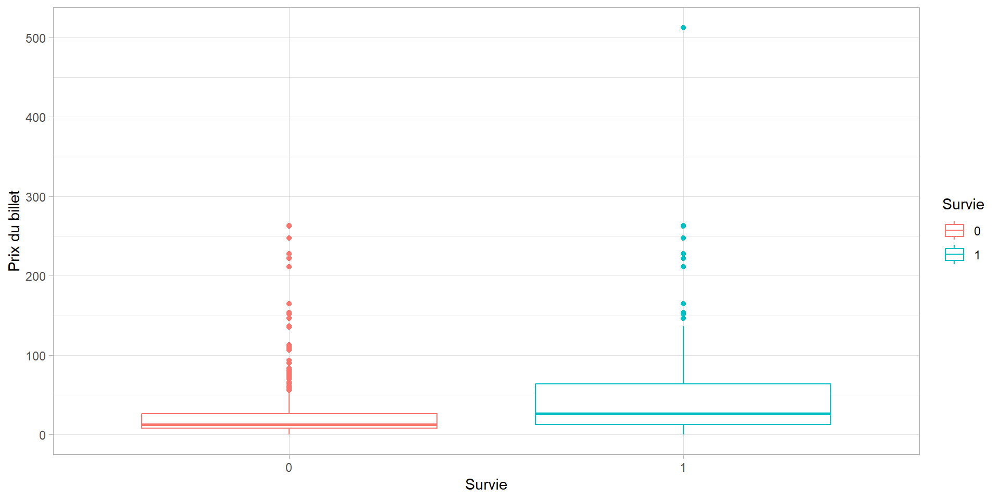
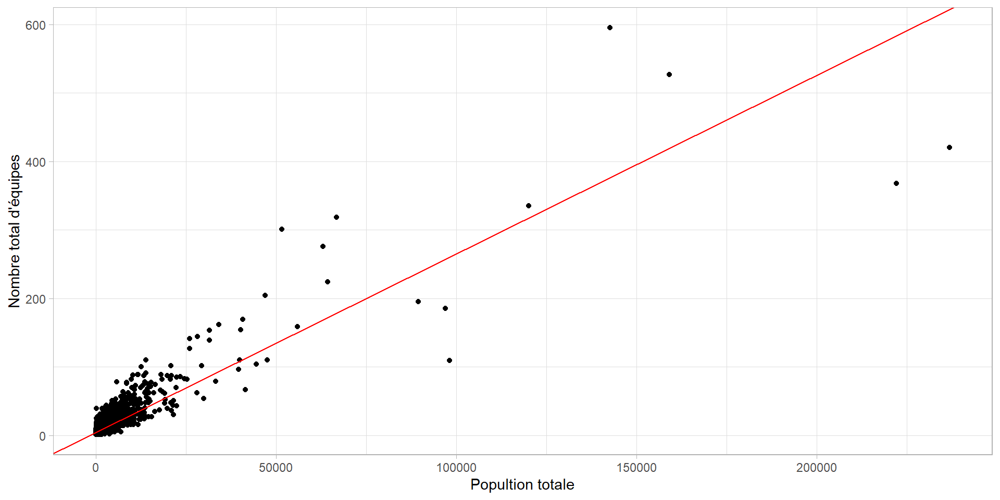

# A tibble: 1 × 1
`Nombre de survivants`
<int>
1 427INTRODCTION TO R LANGUAGE TP05
Presented by Djamal Toe
National School for Statistic and Data Analysis
Exercice 1
Chargement des données
Question 1 : Combien d’individus ont survécu ?
Il y a 427 survivants
- La moyenne arithmétique de la variable Survie (indicatrice) correspond à la probabilité d’être en vie
Question 1 : Combien d’individus ont survécu ?
Tableau de contingence Survie/Classe
0 1
1 103 181
2 146 115
3 369 131Non
Question 1 : Combien d’individus ont survécu ?
Statistique de Khi-2
X-squared
107.059 Elle vaut 107.06
V de Cramer
V de Cramer
0.3200762 Question 2 :
| Survie | Total | p-value1 | ||
|---|---|---|---|---|
| 0 | 1 | |||
| Sexe2 | <0.001 | |||
| Enfant | 36.00 (41.86%) | 50.00 (58.14%) | 86.00 (100.00%) | |
| Femme | 84.00 (23.93%) | 267.00 (76.07%) | 351.00 (100.00%) | |
| Homme | 498.00 (81.91%) | 110.00 (18.09%) | 608.00 (100.00%) | |
| Total | 618.00 (59.14%) | 427.00 (40.86%) | 1,045.00 (100.00%) | |
| 1 Pearson’s Chi-squared test | ||||
Question 3 : Analysez le lien entre la survie et le prix du ticket.
Df Sum Sq Mean Sq F value Pr(>F)
Survie 1 201320 201320 69.04 2.98e-16 ***
Residuals 1043 3041464 2916
---
Signif. codes: 0 '***' 0.001 '**' 0.01 '*' 0.05 '.' 0.1 ' ' 1Il y a un lien car le test d’anova est significatif à 5%.
[1] 0.06208252Mais le rapport de correlation stipule que le lien n’est pas puissant.
Question

EXERCICE 2 : Etude de la mobilité sociale intergénérationnelle
Question 1
[1] 6947[1] 1Il y a 6947 observations
Il n’y a qu’une seule variable numérique
Question 2 : Affichez le nombre de modalités des variables CSFils et CSPere
[1] 6[1] 6Il y en a 6 par variable
Question 3 : Créez les variables libCSFils et libCSPere
Question 4 : Affichez le tableau de contingence des variables libCSFils (en ligne) et libCSPere (en colonne)
Agriculture Artisan Cadre et PIS
Agriculture 252 6 2
Artisan 72 182 37
Cadre et PIS 105 189 310
Professions intermédiaires 190 205 152
Employé 98 79 37
Ouvrier 426 210 52
Professions intermédiaires Employé Ouvrier
Agriculture 2 3 20
Artisan 60 43 225
Cadre et PIS 266 144 204
Professions intermédiaires 263 179 701
Employé 73 108 375
Ouvrier 135 169 1373Question 5 : En tenant compte de la pondération :
- Calculez la statistique du Khi-Deux des variables libCSFils et libCSPere
Quand il y a les poids on fait la somme des poids plutot que de compter les effectifs
X-squared
2487148 Question 5 : En tenant compte de la pondération :
- Calculez le V de cramer
V de Cramer
0.2675883 Question 6 :
La pondération étant uniforme (même poids pour chaque individu), est-ce que les distributions (au sens des fréquences) de chacune des variables changent ?
Agriculture Artisan Cadre et PIS
Agriculture 252 6 2
Artisan 72 182 37
Cadre et PIS 105 189 310
Professions intermédiaires 190 205 152
Employé 98 79 37
Ouvrier 426 210 52
Professions intermédiaires Employé Ouvrier
Agriculture 2 3 20
Artisan 60 43 225
Cadre et PIS 266 144 204
Professions intermédiaires 263 179 701
Employé 73 108 375
Ouvrier 135 169 1373Question 6 :
Calculez la statistique du Khi-Deux des variables libCSFils et libCSPere sur les 6 947 individus interrogés.
Pearson's Chi-squared test
data: tab
X-squared = 2487.1, df = 25, p-value < 2.2e-16Question 6 :
Que remarquez-vous ? Quelle différence observez-vous avec la question précédente ?
La stat est multipliée par le poids
Question 7 : a)
| libCSPere | Total | p-value1 | ||||||
|---|---|---|---|---|---|---|---|---|
| Agriculture | Artisan | Cadre et PIS | Professions intermédiaires | ** Employé** | Ouvrier | |||
| libCSFils | <0.001 | |||||||
| Agriculture | 252.00 (88.42%) | 6.00 (2.11%) | 2.00 (0.70%) | 2.00 (0.70%) | 3.00 (1.05%) | 20.00 (7.02%) | 285.00 (100.00%) | |
| Artisan | 72.00 (11.63%) | 182.00 (29.40%) | 37.00 (5.98%) | 60.00 (9.69%) | 43.00 (6.95%) | 225.00 (36.35%) | 619.00 (100.00%) | |
| Cadre et PIS | 105.00 (8.62%) | 189.00 (15.52%) | 310.00 (25.45%) | 266.00 (21.84%) | 144.00 (11.82%) | 204.00 (16.75%) | 1,218.00 (100.00%) | |
| Professions intermédiaires | 190.00 (11.24%) | 205.00 (12.13%) | 152.00 (8.99%) | 263.00 (15.56%) | 179.00 (10.59%) | 701.00 (41.48%) | 1,690.00 (100.00%) | |
| Employé | 98.00 (12.73%) | 79.00 (10.26%) | 37.00 (4.81%) | 73.00 (9.48%) | 108.00 (14.03%) | 375.00 (48.70%) | 770.00 (100.00%) | |
| Ouvrier | 426.00 (18.01%) | 210.00 (8.88%) | 52.00 (2.20%) | 135.00 (5.71%) | 169.00 (7.15%) | 1,373.00 (58.05%) | 2,365.00 (100.00%) | |
| Total | 1,143.00 (16.45%) | 871.00 (12.54%) | 590.00 (8.49%) | 799.00 (11.50%) | 646.00 (9.30%) | 2,898.00 (41.72%) | 6,947.00 (100.00%) | |
| 1 Pearson’s Chi-squared test | ||||||||
Question 7 :
Comment interpréter le 88.42% à l’intersection des modalités Agriculture des deux variables ?
Dans une situation de fluidité sociale, comment serait la table des recrutements ?
Quid dans le cas d’une absence totale de mobilité sociale ?
Exercice 3 : Retour sur l’exo 1 du TP3
Question 1 : Quel indicateur permet de mesurer le lien linéaire entre deux variables quantitatives ?
Il s’agit du coefficient de corrélqtion de Pearson de formule :
\[ \begin{equation} \begin{split} \rho_{XY} &= \frac{Cov(X,Y)}{Var(X)\cdot Var(Y)}, \end{split} \end{equation} \]
Question 1 : Calculer cette statistique entre la variable pop_tot et nb_equip_tot.
cor
0.8866274 Question 2 : Modèle de régression linéaire
- Construire le modèle
- Donnez les différents coefficients
(Intercept) pop_tot
4.399422270 0.002609363 Question 2 : Modèle de régression linéaire

Question 2 : Modèle de régression linéaire
Call:
lm(formula = Y ~ X, data = df_)
Residuals:
1 2 3 4 5
0.7687 -2.0125 1.3937 -0.9813 0.8313
Coefficients:
Estimate Std. Error t value Pr(>|t|)
(Intercept) 89.0437 1.6283 54.68 1.35e-05 ***
X -3.4063 0.2071 -16.45 0.000489 ***
---
Signif. codes: 0 '***' 0.001 '**' 0.01 '*' 0.05 '.' 0.1 ' ' 1
Residual standard error: 1.657 on 3 degrees of freedom
Multiple R-squared: 0.989, Adjusted R-squared: 0.9854
F-statistic: 270.4 on 1 and 3 DF, p-value: 0.0004894
Statistiques descriptives avec R